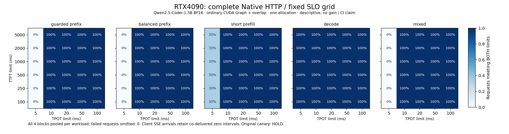
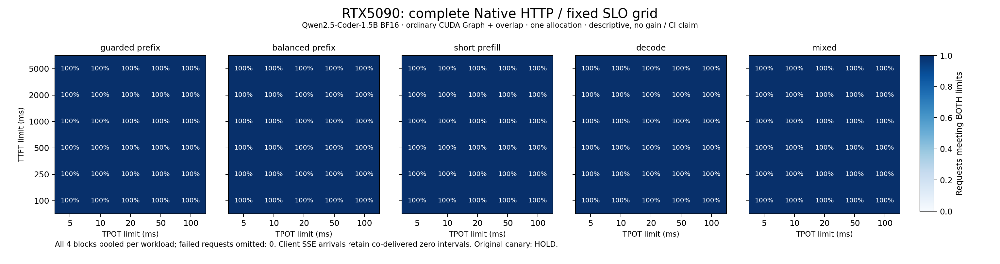

历史 2/432 仍未 closure；
default_promotion=false
，
serving_promotion=false
。
已完成双卡、Qwen2.5-Coder-1.5B、5 类负载 × 4 个完整块。每卡单次 allocation，Resource 关闭；吞吐与尾延迟均为描述性基线，不具备收益、置信区间或完整 HTTP 资格。
历史 2/432 仍未 closure；
default_promotion=false
，
serving_promotion=false
。
跨 4 个块按所有实际请求汇总分位数，吞吐分母为完整块耗时之和；仪器读回与 profile 数据不参与性能表。Goodput 固定 TTFT ≤ 2s、TPOT ≤ 50ms。
| GPU | 负载 | 请求 | 输出 token/s | TTFT p99 ms | TPOT p99 ms | Goodput 请求/s |
|---|---|---|---|---|---|---|
| RTX4090 | guarded_prefix | 24 | 861.8 | 59.32 | 6.10 | 26.93 |
| RTX4090 | balanced_prefix | 24 | 879.4 | 54.26 | 5.93 | 27.48 |
| RTX4090 | short_prefill | 24 | 843.1 | 74.59 | 6.61 | 26.35 |
| RTX4090 | decode | 32 | 1578.1 | 36.99 | 4.93 | 12.33 |
| RTX4090 | mixed | 24 | 973.1 | 66.73 | 5.75 | 15.20 |
| RTX5090 | guarded_prefix | 24 | 1306.8 | 38.26 | 4.20 | 40.84 |
| RTX5090 | balanced_prefix | 24 | 1343.4 | 34.04 | 4.10 | 41.98 |
| RTX5090 | short_prefill | 24 | 1249.3 | 52.50 | 4.57 | 39.04 |
| RTX5090 | decode | 32 | 2371.9 | 26.20 | 3.31 | 18.53 |
| RTX5090 | mixed | 24 | 1486.4 | 43.97 | 3.86 | 23.23 |


完整可复核 JSON · 基线 CSV · 4090 SVG · 5090 SVG